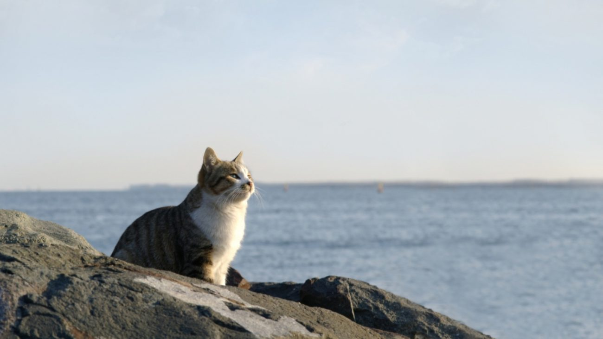

История кота-мореплавателя
У всех котов разная специализация. Один – типичный домосед, другой несет службу на складах, охраняя запасы еды от мышей, а кто-то несет службу на кораблях. Одним из таких четвероногих моряков и был кот по кличке Непотопляемый Сэм, которую получил из-за того, что множество раз попадал в кораблекрушения, но оставался жив.
Читать полностью